ALOM
🤝 Interoperabilty
UBER

Problématique
- Comment communiquer avec les autres micro-services?
- Comment communiquer avec les partenaires?

Contraintes ⛓
Toutes les applications ne sont pas écrites dans le même langage (Java, .Net, NodeJS, PHP, Ruby, Python...)
Les partenaires n'ont pas forcément les mêmes environnements (réseaux, firewall)
Solution 🎉
Définition d'une norme de communication, basée sur des standards.
Web services & web-sockets 🌍
-
Protocole HTTP(S)
- Facile à implémenter (texte)
- Passe les firewalls (port 80/443)
- Sécurisation avec SSL/TLS 🔒
-
Formats de données
- SOAP : XML
- REST : JSON
-
Contrat de service
- SOAP : WSDL
- REST : Swagger...
Web services SOAP 🛁
Web services SOAP
Simple
Object
Access
Protocol
Web services SOAP
Principes architecturaux
- Protocole de type RPC (Remote Procedure Call)
- Représentation XML (Enveloppe, Header, Body) ✉️
- S'appuie sur HTTP, ou tout autre protocole (SMTP, JMS...)
Web services SOAP
Exemple de WSDL
WeatherWS.xml weather-general.xsdWeb services SOAP
Exemple de requête
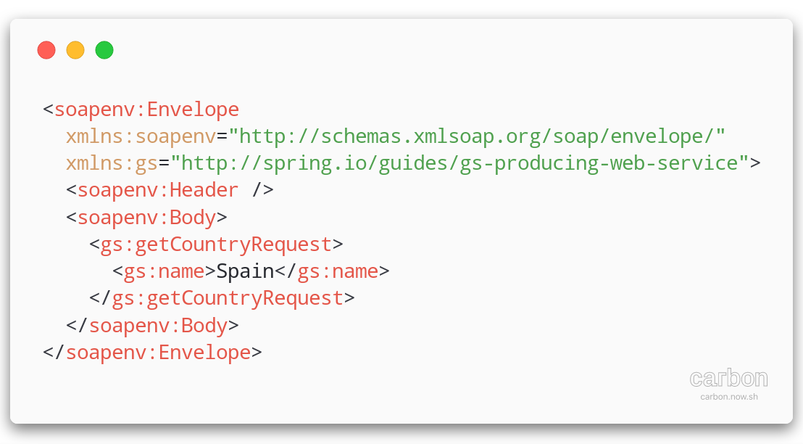Web services SOAP
Exemple de réponse
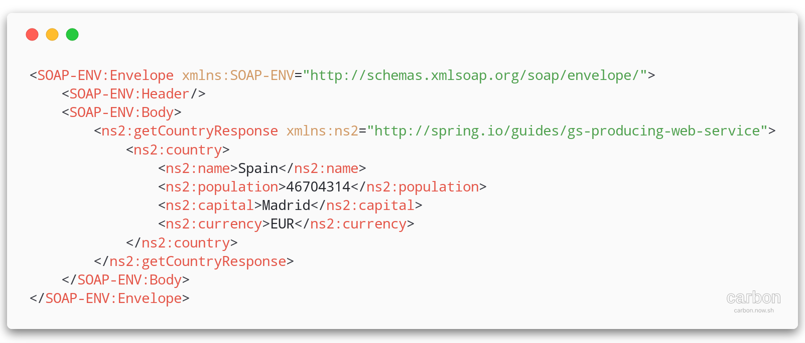En Java ☕
2 possiblités d'implémentation
- Contract-first (top-down) ⬇️
- Code-first (bottom-up) ⬆️
Contract-first
Approche historique
Rédaction d'un contrat WSDL (ouch!) 💢 🤕
Récupération d'un contrat d'un partenaire
Génération d'un stub(client) et d'un squeleton(server) Java
Contract-first
Génération du code avec un plugin maven: 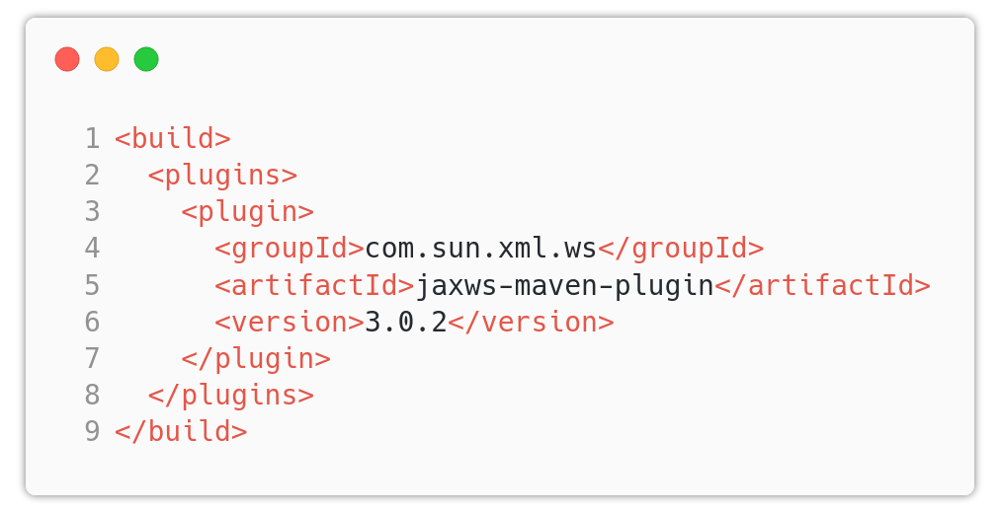
Code-first
Approche plus simple 😎
Écriture des classes/interfaces Java
Génération du WSDL à partir des classes (annotations/méthodes etc...)
Code-first
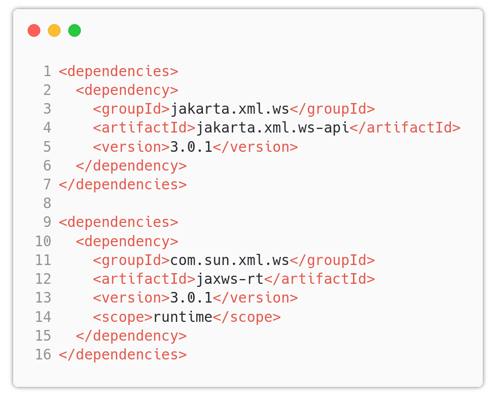Web services REST
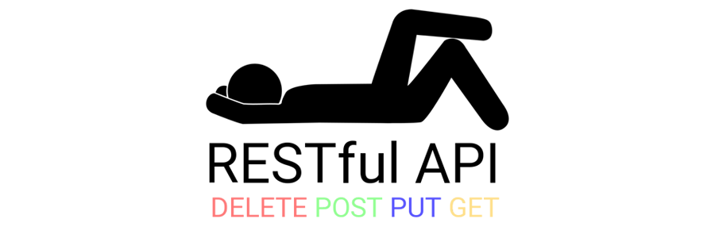Web services REST
REpresentational
State
Transfert
Web services REST
Principes architecturaux
- Architecture découplée client/serveur
- Sans état (pas de session)
-
Accès à des ressources:
- Identifiées de manière unique
- Manipulées via des représentations (JSON, XML, HTML...)
- Compatible avec une mise en cache
- Données Hypermédia
Négociation de contenu
Principes au coeur du web
Le client indique au serveur ses attentes via des headers HTTP
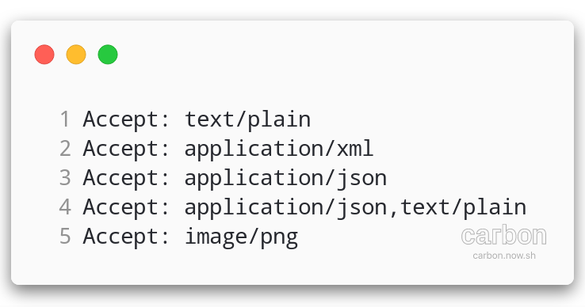Négociation de contenu
- Format des données : header
Accept - Traduction : header
Accept-Language

Web services REST
HATEOAS : Hypermedia As The Engine Of Application State
Le message contient les informations permettant de manipuler l'application
Web services REST : Exemple XML
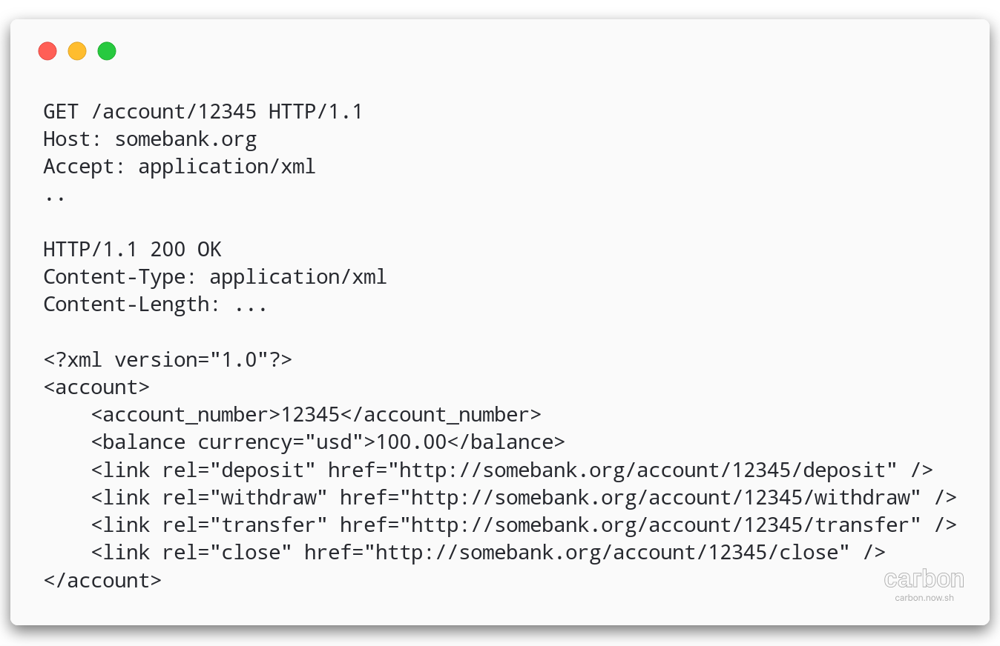Web services REST : Exemple JSON
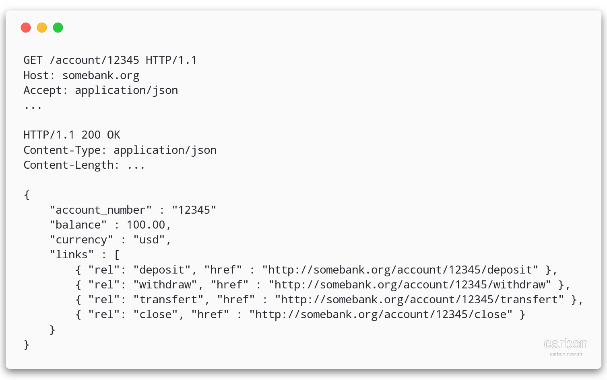Contrat de service REST
OpenAPI (Swagger)
Description des API au format JSON ou YAML + Rendu Web + "Try It"
Pokemon APISwagger
Affichage de la documentation sous forme de page web
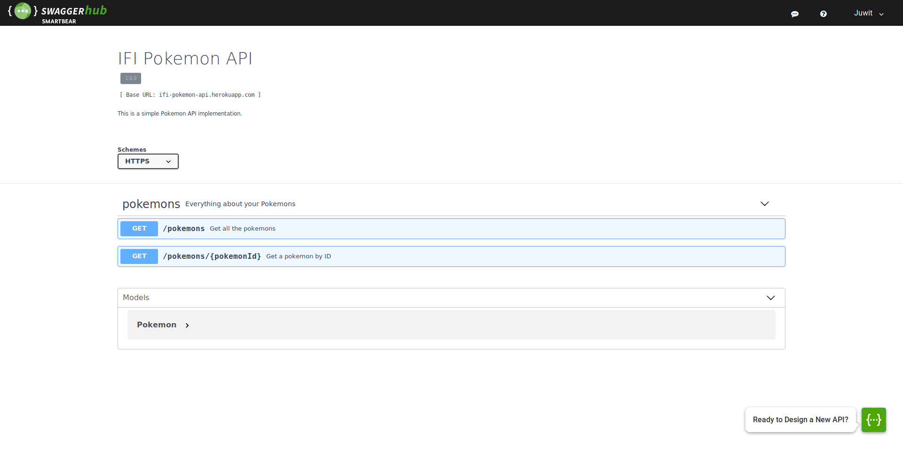Swagger
Génération de squelettes clients/serveur
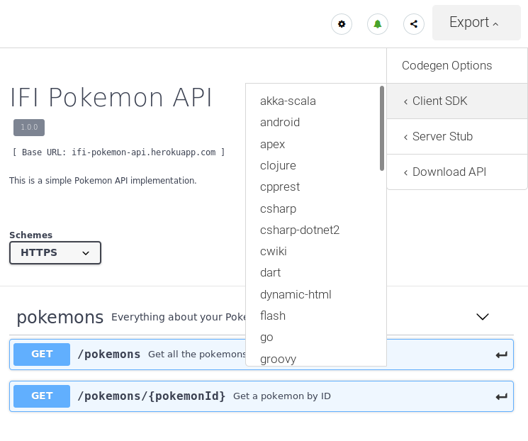Exposition d'un service REST Spring
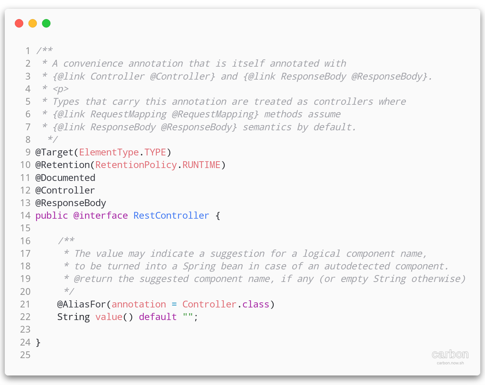En Spring
/api/pokemon-types/{id}
/api/pokemon-types?orderBy=name
/api/pokemon-types?type=poison
@RequestMapping: écouter une URI@PathVariable: récupérer les variables d'URI entre '{}'@RequestParam: récupérer les paramètres de requête (query-strings '?a=b&c=d')@RequestBody: récupérer le corps de la requête
@RequestMapping
/api/pokemon-types
@PathVariable
/api/pokemon-types/{id}
@RequestParam
/api/pokemon-types?orderBy=name
@RequestParam
/api/pokemon-types?type=poison
@RequestBody
POST /api/trainers
Consommation REST en Spring
RestTemplate
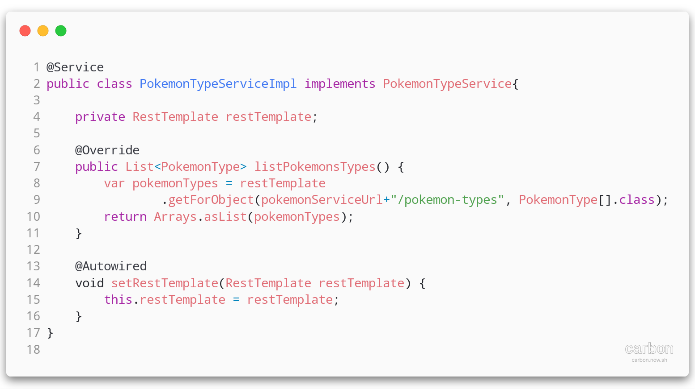Spring RestTemplate
Classe utilitaire pour effectuer des appels REST
- Exécute les requêtes HTTP : GET/POST/PUT/PATCH/OPTIONS/DELETE/HEAD
- Utilise
jackson-databindpour convertir les objets Java en JSON !
Outillage
💪 $> curl
ou
Postman/Insomnia
web-sockets
Communication client ➡️ serveur
Communication serveur ➡️ client
web-sockets
Maintient de connexion HTTP entre le client et le serveur
Mode "Push"
web-sockets
Cas d'usage
- Notifications
- Messagerie / Dashboarding
- Jeux en ligne
- ...
TP